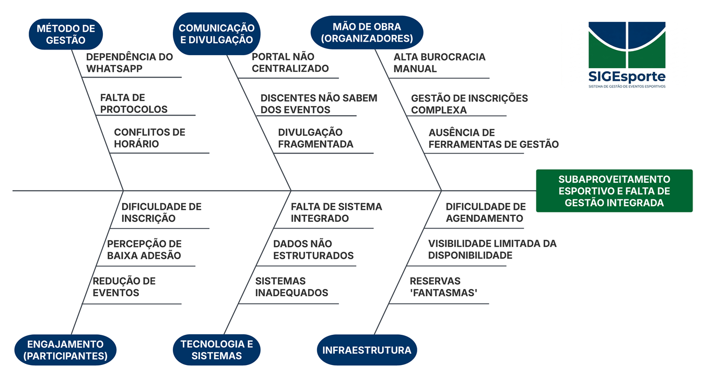
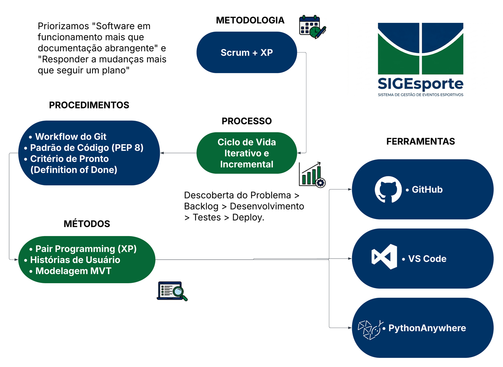
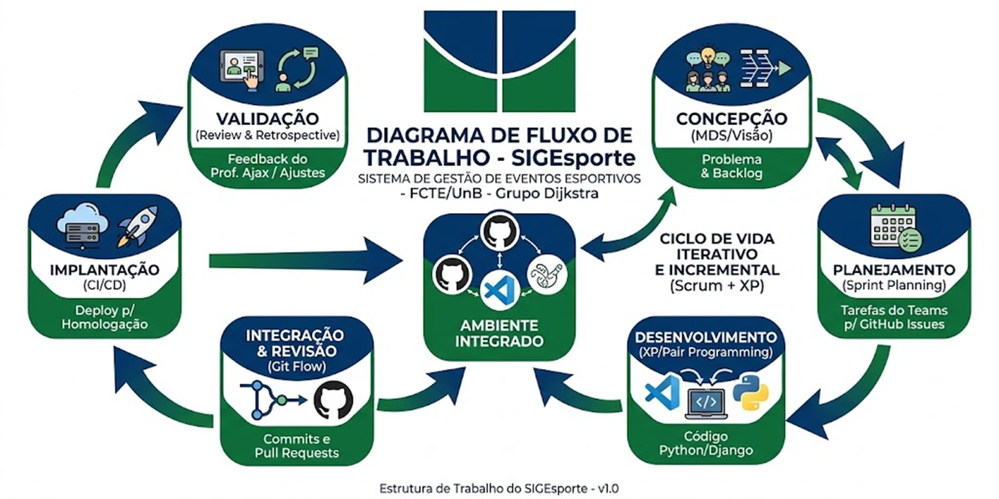

Tabela 1 - Integrantes do Grupo:
| Matrícula | Nome | Função | Pontos de participação na elaboração |
|---|---|---|---|
| 222007059 | Nicolas Coqueiro Almeida de Freitas | Trancou a disiplina | 11,11% |
| 242015666 | Marcos Vinicius Monteiro | Git Master | 11,11% |
| 241012196 | Davi Gualberto Rocha | Desenvolvedor | 11,11% |
| 251033162 | Igor B. S. Salles | Desenvolvedor | 11,11% |
| 241010880 | Ana Paula Jardim Rezende Vilela | Desenvolvedor | 11,11% |
| 241012409 | Welder Rodrigues de Medeiros | Product Owner e Scrum Master | 11,11% |
| 2110162938 | Gustavo Lima Menezes | Desenvolvedor | 11,11% |
| 222006777 | Guilherme Oliveira Monteiro | Garantia de Qualidade (QA) | 11,11% |
| 241012300 | Lucas Menezes Folha Brito | Desenvolvedor | 11,11% |
Histórico de Revisões
| Data | Versão | Descrição | Autor |
|---|---|---|---|
| 20/04/2026 | 1.0 | Primeira reunião do grupo Dijkstra. | Nicolas Coqueiro Almeida de Freitas |
| 21/04/2026 | 1.1 | Inclusão de diagramas. | Welder Rodrigues de Medeiros |
| 01/05/2026 | 1.2 | Inclusão dos roteiros de testes. | Nicolas Coqueiro Almeida de Freitas |
Visão de Produto e Projeto
Sumário
1 VISÃO GERAL DO PRODUTO ........................................................................................................ 3 1.1 Problema ................................................................................................................... 3 1.2 Declaração de Posição do Produto ......................................................................... 3 1.3 Objetivos do Produto ............................................................................................... 4 1.4 Tecnologias a Serem Utilizadas .............................................................................. 4 2 VISÃO GERAL DO PROJETO ......................................................................................................... 4 2.1 Ciclo de vida do projeto de desenvolvimento de software.................................... 4 2.2 Organização do Projeto ........................................................................................... 4 2.3 Planejamento das Fases e/ou Iterações do Projeto ............................................... 5 2.4 Matriz de Comunicação .......................................................................................... 5 2.5 Gerenciamento de Riscos ........................................................................................ 5 2.6 Critérios de Replanejamento .................................................................................. 6 3 PROCESSO DE DESENVOLVIMENTO DE SOFTWARE ................................................................ 6 4 DECLARAÇÃO DE ESCOPO DO PROJETO.................................................................................... 7 4.1 Backlog do produto .................................................................................................. 7 4.2 Perfis.......................................................................................................................... 7 4.3 Cenários .................................................................................................................... 7 4.4 Tabela de Backlog do produto ................................................................................ 8 5 MÉTRICAS E MEDIÇÕES ............................................................................................................... 9 5.1 GQM de medições .................................................................................................... 9 6 TESTES DE SOFTWARE ................................................................................................................. 9 6.1 Estratégia de testes contendo: ................................................................................. 9 6.2 Roteiro de teste:........................................................................................................ 9 7 REFERÊNCIAS BIBLIOGRÁFICAS.............................................................................................. 10
VISÃO DO PRODUTO E PROJETO
1 VISÃO GERAL DO PRODUTO
1.1 Problema
O cenário atual da Faculdade de Ciências e Tecnologias em Engenharia (FCTE) revela uma desconexão entre a infraestrutura disponível e o engajamento da comunidade acadêmica em atividades esportivas. O problema reside na fragmentação e informalidade da gestão. Atualmente, o campus da FCTE dispõe de um espaço poliesportivo destinados a diversas modalidades, como futsal, basquete e vôlei. No entanto, ao contrário do Campus Darcy Ribeiro que conta com a Coordenação de Esporte e Lazer (CEL) e sistemas formalizados para reserva de espaços como o Centro Olímpico e a Quadra Santander, a FCTE carece de uma plataforma centralizada e acessível para a gestão de suas instalações. Na FCTE, o uso da quadra e a organização de campeonatos dependem de fluxos de comunicação descentralizados, majoritariamente via WhatsApp. Essa prática gera opacidade: o aluno não sabe quando a quadra está livre, o organizador não tem um canal oficial para atrair participantes e a administração do campus perde o controle sobre o aproveitamento real dos espaços. A oportunidade de software aqui é a criação de um Ecossistema Digital Esportivo, que substitua a "gestão por mensagens" por um fluxo de dados estruturado, garantindo que a oferta de eventos encontre a demanda dos alunos de forma eficiente e transparente.
1.2 Análise de Causa Raiz: Diagrama de Ishikawa
Para compreender a fundo porque o subaproveitamento esportivo ocorre na FCTE, utilizamos o Diagrama de Ishikawa (Espinha de Peixe). Esta técnica permite visualizar as causas secundárias que alimentam o problema principal.
Figura 1: Diagrama de Ishikawa

O diagrama acima segmenta as falhas em quatro categorias principais que justificam a necessidade do SIGEsporte:
- Métodos (Processos): A dependência do WhatsApp como ferramenta de gestão é o maior gargalo. Sem um protocolo de agendamento fixo e auditável, ocorrem conflitos de horários e "reservas fantasmas", resultando em espaços vazios enquanto há alunos querendo jogar.
- Comunicação (Divulgação): A inexistência de um portal centralizado cria um "vácuo de informação". O aluno interessado muitas vezes só descobre que um evento ocorreu após o seu encerramento, o que desencoraja a participação futura.
- Mão de Obra (Organizadores): Os organizadores de eventos (sejam ligas ou alunos independentes) enfrentam uma carga burocrática alta. Sem uma ferramenta de cadastro de participantes, o controle manual torna a organização exaustiva e suscetível a erros.
- Engajamento (Participantes): A dificuldade de inscrição atua como uma barreira de entrada. Processos complicados afastam o público-alvo, reduzindo o número de eventos realizados devido à baixa adesão percebida. A solução consiste no desenvolvimento de uma plataforma web centralizada para a gestão de reservas e acompanhamento de eventos esportivos na FCTE. O sistema funcionará como um portal único onde a comunidade acadêmica poderá visualizar a disponibilidade das
quadras, realizar solicitações de reserva baseadas em regras de negócio pré-definidas e acompanhar o calendário de torneios e resultados das atléticas. Justificativa e Contribuição Esperada: A solução proposta ataca diretamente as causas de falha identificadas no diagrama de Ishikawa através de três pilares:
- Padronização e Transparência (Método): Ao digitalizar o fluxo de reserva, o software elimina a informalidade e as "regras ocultas". Espera-se que todos os usuários tenham clareza sobre suas cotas de uso (ex: 2 vezes ao mês) e prazos de antecedência, garantindo uma divisão justa do espaço público.
- Centralização da Informação (Tecnologia): A plataforma substitui as planilhas manuais e os grupos de mensagens por um banco de dados em tempo real. Isso elimina conflitos de horários e a subutilização da quadra, pois qualquer aluno poderá verificar janelas de horário livre instantaneamente via navegador.
- Eficiência Administrativa (Pessoas): O sistema automatiza o envio de confirmações e a geração de documentos de autorização (conforme o modelo da UnB). Espera-se reduzir drasticamente a carga de trabalho manual dos organizadores e das entidades (Atléticas e CAs), permitindo que o foco mude da "burocracia do agendamento" para o fomento das atividades esportivas e integração no campus.
1.3 Declaração de Posição do Produto O grupo desenvolverá uma plataforma web voltada para o gerenciamento de espaços esportivos e acompanhamento de competições no campus FCTE/UnB. O sistema permitirá a reserva de quadras, controle de cotas de uso, registro de resultados de torneios e visualização de uma agenda centralizada. Embora existam soluções globais de agendamento, o diferencial deste produto reside na especificidade e integração com a UnB: - Regras Customizadas: Ao contrário de agendas genéricas, o software implementa as regras específicas de reserva do campus (como a antecedência mínima e limites mensais). - Histórico de Atletas Locais: Foca no acompanhamento das atléticas e eventos próprios da FCTE, criando um senso de comunidade que plataformas comerciais não possuem. - Consequência da Não Existência: Atualmente, a alternativa é a gestão manual via grupos de mensagens ou planilhas, o que resulta em perda de informações e conflitos de horários. - Inventário de Itens: Para responsabilidade de quem está utilizando do meio.
1.4 Usuários-Alvo:
Tabela 1 — Público-alvo do SIGEsporte
| Público | Descrição | Necessidade Principal |
|---|---|---|
| Alunos da FCTE | Estudantes que buscam praticar esportes e precisam de transparência para reservar horários sem burocracia excessiva. | Encontrar eventos esportivos, visualizar horários disponíveis e realizar inscrições rapidamente. |
| Atléticas e CAs | Entidades que organizam torneios e necessitam de uma ferramenta para registrar o progresso das competições. | Divulgar campeonatos, gerenciar inscrições e organizar reservas de espaços esportivos. |
| Gestores da FCTE (Clientes) | Responsáveis pela infraestrutura do campus que precisam de relatórios de uso para justificar manutenções ou novos investimentos nos espaços esportivos. | Controlar o uso das instalações, evitar conflitos de agenda e obter dados estatísticos de utilização. |
Tabela 2 — Declaração de posição para alunos da FCTE
| Elemento | Descrição |
|---|---|
| Para | Alunos da FCTE (Participantes) |
| Necessidade | Encontrar eventos esportivos de forma rápida, visualizar horários livres da quadra para lazer e realizar inscrições sem burocracia. |
| O SIGEsporte é | Uma aplicação WEB |
| Que | Oferece uma vitrine única de eventos e um calendário de disponibilidade em tempo real. |
| Ao contrário de | Grupos de WhatsApp e comunicados em murais físicos, que possuem um alcance limitado. |
| Nosso produto | Permite que o aluno visualize apenas o que é relevante: “O que tem hoje?” e “Onde me inscrevo?”. |
Tabela 3 — Declaração de posição para organizadores
| Elemento | Descrição |
|---|---|
| Para | Atléticas e CAs (Organizadores) |
| Necessidade | Divulgar campeonatos para todo o campus, gerenciar a lista de inscritos e reservar espaços oficiais para treinos e jogos. |
| O SIGEsporte é | Uma aplicação WEB |
| Que | Automatiza a coleta de dados dos participantes e formaliza o pedido de reserva de espaço, gerando um histórico organizado. |
| Ao contrário de | Google Forms e planilhas de Excel compartilhadas que fazem apenas coleta de dados isolados. |
| Nosso produto | Vincula a inscrição ao evento e o evento ao espaço físico, criando uma jornada completa de organização em um só lugar. |
Tabela 4 — Declaração de posição para gestores
| Elemento | Descrição |
|---|---|
| Para | Gestores da FCTE (Administração) |
| Necessidade | Controle sobre o uso das instalações físicas, mitigação de conflitos de agenda e dados estatísticos sobre a adesão esportiva no campus. |
| O SIGEsporte é | Uma aplicação WEB |
| Que | Fornece um painel de controle para aprovação de reservas e relatórios de ocupação dos espaços (subaproveitamento vs. superpopulação). |
| Ao contrário de | Agendamento manual (e-mail ou contato direto com a prefeitura do campus). |
| Nosso produto | Transforma uma gestão baseada em “quem pediu primeiro no privado” em uma gestão transparente e baseada em dados, permitindo decisões melhores sobre a manutenção e ampliação dos espaços esportivos. |
1.5 Objetivos do Produto
O SIGEsporte tem o propósito de transformar a cultura esportiva da FCTE através da tecnologia, substituindo processos informais por uma plataforma de governança e engajamento.
1.5.1 Objetivo Principal
Desenvolver e implementar um sistema web integrado para a gestão centralizada de eventos e espaços esportivos da Faculdade de Ciências e Tecnologias em Engenharia (FCTE/UnB), visando otimizar a ocupação das instalações e facilitar a participação da comunidade acadêmica em atividades físicas e competitivas.
1.5.2 Objetivos Secundários
Para alcançar o objetivo principal, o projeto desdobra-se nas seguintes metas específicas: - Automatizar o Agendamento: Substituir o fluxo de reservas via WhatsApp por um sistema de calendário dinâmico, eliminando conflitos de horários e reservas duplicadas. - Centralizar a Comunicação: Criar um portal único de divulgação onde qualquer aluno possa visualizar o cronograma completo de eventos esportivos do campus em tempo real. - Facilitar a Gestão de Organizadores: Prover ferramentas para que Atléticas e CAs possam cadastrar eventos e gerenciar listas de participantes de forma estruturada, sem a necessidade de múltiplas planilhas externas. - Mapear o Aproveitamento de Espaços: Gerar dados que permitam à administração da FCTE identificar horários de subaproveitamento e picos de demanda na quadra e demais áreas esportivas. - Fomentar a Inclusão Esportiva: Reduzir a barreira de entrada para alunos não federados ou não pertencentes a atléticas, permitindo que encontrem atividades de lazer de forma intuitiva. - Promover a Transparência: Estabelecer um fluxo de aprovação de reservas que seja visível para todos os interessados, garantindo a equidade no uso dos bens públicos da universidade. 1.6 Tecnologias a Serem Utilizadas A stack tecnológica do SIGEsporte foi selecionada para garantir um desenvolvimento ágil, focado em entregas incrementais e facilidade de manutenção.
Linguagem e Framework (Back-end/Full-stack):
- Python: Escolhido pela sua sintaxe clara e vasta biblioteca padrão, o que acelera o desenvolvimento em um ambiente acadêmico.
- Django: Framework web de "alto nível" que segue o padrão MVT (Model-View-Template).
Persistência de Dados:
- SQLite: Banco de dados relacional leve que não requer um servidor separado. É a escolha ideal para a fase de desenvolvimento e prototipagem em MDS, permitindo que a equipe foque na lógica de negócio antes de escalar para sistemas como PostgreSQL.
Ambiente e Infraestrutura:
- VS Code: Ambiente de Desenvolvimento Integrado (IDE) principal, utilizado por sua extensibilidade e integração nativa com o Git e Python.
- GitHub: Plataforma de hospedagem de código e controle de versão. Será o coração da colaboração da equipe Dijkstra, utilizando Pull Requests e Issues para gestão do código.
- PythonAnywhere: Serviço de hospedagem em nuvem otimizado para aplicações Python/Django. Será utilizado para o deploy da aplicação, permitindo que o professor e os usuários da FCTE acessem o sistema via web.
Processo de Desenvolvimento (Metodologias):
O grupo adotará uma abordagem híbrida de métodos ágeis, focando em produtividade e qualidade técnica:
- Scrum: Utilizado para a gestão do projeto. O trabalho será dividido em Sprints, com cerimônias de Daily para alinhamento, Sprint Planning para definir o backlog e Sprint Review/Retrospective para melhoria contínua.
- Extreme Programming (XP): Focado na excelência da engenharia. Práticas como Programação em Par (Pair Programming) para redução de bugs, Refatoração constante do código e Integração Contínua serão fundamentais para garantir que o SIGEsporte seja entregue com qualidade técnica superior.
2 VISÃO GERAL DO PROJETO
2.1 Ciclo de vida do projeto de desenvolvimento de software
Figura 2: Ciclo de vida

2.2 Organização do Projeto
Tabela 5: Organização do Projeto | Papel | Atribuições | Responsável | Participantes | |---|---|---|---| | Scrum Master | Facilita as cerimônias (Dailies, Plannings), remove impedimentos técnicos ou de comunicação e garante que o grupo siga a metodologia ágil. | Welder Rodrigues de Medeiros | Welder Rodrigues de Medeiros | | Product Owner (PO) | Representa o interesse dos usuários (Alunos/FCTE). Define as prioridades do Backlog, escreve as User Stories e valida se a entrega atende ao Problema de Negócio. | Welder Rodrigues de Medeiros | Welder Rodrigues de Medeiros | | Desenvolvedor | Implementa as funcionalidades tanto no Back-end quanto no Front-end, garantindo que as regras de negócio funcionem. | Igor B. S. Salles | Igor B. S. Salles, Ana Paula Jardim Rezende Vilela, Lucas Menezes Folha Brito, Gustavo Lima Menezes, Davi Gualberto Rocha, Marcos Vinicius Monteiro, Welder Rodrigues de Medeiros | | Garantia de Qualidade (QA) | Garante a qualidade do código. Responsável por incentivar a criação de testes unitários e validar se o sistema não apresenta bugs críticos antes do deploy. | Guilherme Oliveira Monteiro | Guilherme Oliveira Monteiro | | Git Master | Responsável pela configuração do repositório no GitHub (proteção de branches) e pelo gerenciamento e manutenção do deploy. | Marcos Vinicius Monteiro | Marcos Vinicius Monteiro |
2.3 Planejamento das Fases e/ou Iterações do Projeto
Tabela 6: Planejamento das Sprints | Sprint | Produto (Entrega) | Data Início | Data Fim | Entregável(eis) | Responsáveis | % conclusão | |---|---|---|---|---|---|---| | Sprint 1 | Concepção e Setup | | | Ambiente configurado em todas as máquinas. | Scrum Master, Git Master e Desenvolvedores | | | Sprint 2 | Base de Usuários e Perfis | | | Modelagem do Banco de Dados; Sistema de Cadastro/Login para Alunos e Organizadores; Deploy inicial. | Desenvolvedores e Git Master | | | Sprint 3 | Gestão de Espaços (Core) | | | Módulo de inventário de espaços; Funcionalidade de solicitação de reserva de horários pelos organizadores. | Desenvolvedores e Git Master | | | Sprint 4 | Portal de Eventos | | | Mural centralizado de eventos; Cadastro de novos eventos esportivos; Interface de visualização para o Aluno. | Desenvolvedores e Git Master | | | Sprint 5 | Validação e Ajustes | | | Painel administrativo para Gestores; Testes unitários de fluxo; Refatoração de código. | QA, Desenvolvedores, Git Master e Scrum Master | | | Sprint 6 | Encerramento e Entrega | | | Documentação de Arquitetura; Guia do Usuário; Apresentação final. | Todos os cargos | |
2.4 Matriz de Comunicação
| Descrição | Área | Envolvidos | Periodicidade | Produtos Gerados |
|---|---|---|---|---|
| Reunião de Alinhamento Técnico | Desenvolvimento | Sub-times (Front/Back) | Semanal | Definição de tarefas técnicas e resolução de impedimentos de código. |
| Reunião Geral de Sprint (Review & Planning) | Gestão e Técnico | Time Todo | Quinzenal | Relatório de status da Sprint e Backlog da próxima Sprint atualizado. |
| Monitoramento de Tarefas | Gestão / Ops | Scrum Master e Desenvolvedores | Contínua (Diária) | Atualização de Status no GitHub Issues (To Do, Doing, Done). |
| Sincronização de Gestão e Prazos | Administrativa | Scrum Master, PO e Professor | Semanal (Teams) | Relatório de progresso semanal e atualização do cronograma. |
| Validação de Documentação | Qualidade | Gestor de Doc. e Arquiteto | Quinzenal | Documento de Visão e Arquitetura atualizados no repositório. |
2.5 Gerenciamento de Riscos A gestão de riscos do projeto SIGEsporte é um processo contínuo que visa minimizar impactos negativos no cronograma, na qualidade e no moral da equipe. Abaixo, listamos os principais riscos identificados para o contexto da FCTE e da disciplina de MDS:
Tabela 8: Gerenciamento de Riscos | Risco | Categoria | Probabilidade | Impacto | Plano de Mitigação (Evitar) | Plano de Contingência (Ocorreu) | |---|---|---|---|---|---| | Incompatibilidade de Horários | Humano | Alta | Médio | Definir horários fixos de reuniões no Teams. | Gravar reuniões e utilizar o GitHub Issues para comunicação assíncrona. | | Curva de Aprendizado (Django/Python) | Técnico | Média | Alto | Realizar sessões de Pair Programming e workshops internos. | Reduzir o escopo da Sprint e focar em funcionalidades críticas (MVP). | | Abandono de Membros (Evasão) | Humano | Baixa | Muito Alto | Manter um clima organizacional saudável e divisão equitativa de tarefas. | Redistribuição do Backlog e renegociação de prazos com o Prof. Ajax. | | Falha no Deploy | Técnico | Média | Médio | Realizar deploys incrementais. | Utilizar ambiente local para a demonstração e buscar suporte técnico imediato. | | Mudança de Requisitos | Escopo | Média | Médio | Manter o PO alinhado com o professor e stakeholders da FCTE. | Readequar o Documento de Visão e priorizar o "essencial" sobre o "desejável". |
2.6 Critérios de Replanejamento O replanejamento será disparado com base em gatilhos específicos, geralmente derivados da materialização de riscos ou de feedbacks coletados durante as revisões de ciclo. Identificamos os riscos da seção anterior que, se confirmados, exigem obrigatoriamente um replanejamento: - Atraso Crítico no Cronograma (Risco de Escopo): Se ao final de uma Sprint o time entregar menos de 70% do planejado, o Backlog das Sprints subsequentes deve ser reavaliado. - Evasão de Membros (Risco Humano): A perda de 2 ou mais integrantes da equipe exige a redistribuição imediata de papéis e a possível redução do escopo do MVP. - Inviabilidade Técnica (Risco de Tecnologia): Caso a stack (Django/SQLite) apresente uma limitação técnica impeditiva para uma funcionalidade essencial (ex: conflitos insolúveis no agendamento de quadras). - Mudança de Prioridade Governamental/Acadêmica: Caso o professor ou a gestão da FCTE identifiquem uma necessidade urgente que não estava mapeada inicialmente.
3 PROCESSO DE DESENVOLVIMENTO DE SOFTWARE
Figura 3: Processo de desenvolvimento

Para o SIGEsporte, a equipe decidiu por uma abordagem híbrida. O Scrum organizará nosso tempo e entregas, enquanto o XP ditará a qualidade do código produzido. O projeto será fatiado em ciclos de feedback curto para garantir que o software evolua conforme as necessidades dos alunos e gestores. - Sprints: Ciclos semanais de desenvolvimento. Cada semana deve terminar com um incremento de código testado e integrado. - Sprint Planning: Reunião no início da semana para selecionar as User Stories do Backlog que serão transformadas em código. - Daily Sync: Alinhamento rápido (via Teams ou assíncrono no GitHub) para identificar bloqueios. - Sprint Review & Retrospective: Reunião quinzenal com o time todo para demonstrar o que foi feito e ajustar o processo de trabalho do grupo. Para evitar o acúmulo de dívida técnica em um grupo de 10 pessoas, adotaremos práticas do
Extreme Programming:
- Pair Programming: O desenvolvimento de funcionalidades críticas no Django será feito em dupla. Isso acelera o aprendizado de quem tem menos facilidade com Python e reduz drasticamente a incidência de bugs.
- Refatoração: O time tem liberdade e dever de melhorar o código existente, visando clareza e manutenibilidade, desde que os testes continuem passando.
- Integração Contínua (CI): Todo código deve ser integrado ao ramo principal (main) do GitHub somente via Pull Requests, garantindo que a aplicação esteja sempre em estado "executável".
- Propriedade Coletiva: Todos os membros são responsáveis pela integridade do código. Ninguém é "dono" de uma funcionalidade isolada; todos devem ser capazes de navegar no repositório.
4 DECLARAÇÃO DE ESCOPO DO PROJETO
4.1 Backlog do produto
4.1.1 Aluno da FCTE (Participante/Consumidor)
Tabela 9: Requisitos do Aluno
| ID | Requisito | Cenário | Prioridade | Técnica de Elicitação |
|---|---|---|---|---|
| RF01 | Visualizar mural de eventos esportivos | Buscar campeonatos ou treinos abertos no campus. | MUST | Brainstorming |
| RF02 | Realizar inscrição em evento | Garantir participação em um campeonato divulgado. | MUST | Brainstorming |
| RF03 | Filtrar eventos por modalidade | Facilitar a busca por esportes específicos (Ex: Futsal). | SHOULD | Brainstorming |
| RF04 | Receber notificação de novos eventos | Ser avisado proativamente sobre novas oportunidades. | COULD | Brainstorming |
4.1.2 Organizador (Atléticas / CAs / Alunos Líderes)
Tabela 10: Requisitos do Organizador
| ID | Requisito | Cenário | Prioridade | Técnica de Elicitação |
|---|---|---|---|---|
| RF05 | Solicitar reserva de espaço esportivo | Formalizar o pedido de uso da quadra para treino/jogo. | MUST | Brainstorming |
| RF06 | Criar e editar evento esportivo | Divulgar informações de um campeonato próprio. | MUST | Brainstorming |
| RF07 | Gerenciar lista de inscritos | Acessar dados dos alunos que se inscreveram no evento. | MUST | Brainstorming |
| RF08 | Cancelar reserva ou evento | Notificar o sistema sobre a liberação de um horário. | SHOULD | Brainstorming |
| RF09 | Gerar relatório de inscritos (CSV/PDF) | Exportar dados para organização externa. | COULD | Brainstorming |
4.1.3 Gestor da FCTE (Administração/Prefeitura do Campus)
Tabela 11: Requisitos do Gestor
| ID | Requisito | Cenário | Prioridade | Técnica de Elicitação |
|---|---|---|---|---|
| RF10 | Aprovar ou reprovar solicitações de reserva | Validar o uso do patrimônio público por terceiros. | MUST | Brainstorming |
| RF11 | Cadastrar e gerenciar espaços (quadras/campos) | Manter o inventário de locais disponíveis atualizado. | MUST | Brainstorming |
| RF12 | Dashboard de ocupação mensal | Analisar estatísticas de uso para fins administrativos. | SHOULD | Brainstorming |
4.2 Perfis
A seguinte hierarquia garante que o sistema seja seguro e que cada usuário tenha acesso apenas às funcionalidades pertinentes à sua realidade na FCTE.
Tabela 12: Perfis de acesso
| # | Nome do perfil | Características do perfil | Permissões de acesso |
|---|---|---|---|
| 1 | Aluno | Estudante da FCTE/UnB interessado em participar de atividades esportivas ou lazer. | Leitura: Calendário de quadras e mural de eventos. Escrita: Realizar inscrição em eventos e editar o próprio perfil. |
| 2 | Organizador (Atlética/CA) | Representante de entidade estudantil ou grupo independente que promove eventos. | Leitura: Tudo que o aluno acessa. Escrita: Criar eventos, solicitar reserva de quadra, gerenciar inscritos (ver lista) e cancelar próprios eventos. |
| 3 | Gestor (Administração) | Servidor ou responsável técnico pela gestão da infraestrutura da FCTE. | Leitura: Visão completa do sistema e relatórios. Escrita: Aprovar/Reprovar reservas de espaço, cadastrar novos locais e bloquear horários para manutenção. |
| 4 | Admin (Equipe Dijkstra) | Membro do grupo de desenvolvimento (Superusuário do Django). | Total: Acesso ao painel administrativo (/admin) para suporte técnico, correção de dados e gestão de permissões de alto nível. |
4.3 Cenários
Tabela 13: Cenários funcionais
Sistema: SIGEsporte – Cenários funcionais
| Numeração do cenário | Nome do cenário | Sprints |
|---|---|---|
| 01 | Autenticação e Gestão de Perfil de Usuário | |
| 02 | Consulta de Disponibilidade de Espaços Físicos | |
| 03 | Solicitação de Reserva de Quadra/Campo | |
| 04 | Aprovação e Conflito de Reservas (Painel do Gestor) | |
| 05 | Publicação e Divulgação de Evento Esportivo | |
| 06 | Inscrição de Aluno em Evento/Campeonato | |
| 07 | Gestão de Participantes e Listas de Presença | |
| 08 | Cancelamento de Eventos e Liberação Automática de Horários |
4.4 Tabela de Backlog do produto
Tabela 14: Backlog do produto
Sistema: SIGEsporte – Backlog do produto
| Numeração (Cenário / requisito) | Sprint | Nome do requisito | Tipo de requisito (Funcional / não funcional) | Priorização do requisito | Descrição sucinta do requisito | User histories (U.S.) associadas |
|---|---|---|---|---|---|---|
| RF01 | Autenticação de Usuário | Funcional | MUST | Permitir login/cadastro de alunos e organizadores. | US01: Como usuário, quero acessar o sistema com e-mail e senha. | |
| RF02 | Perfil de Usuário | Funcional | SHOULD | Diferenciar permissões entre Aluno, Organizador e Gestor. | US02: Como gestor, quero permissões especiais para administrar a quadra. | |
| RF04 | Reserva de Espaço | Funcional | MUST | Permitir que organizadores solicitem o uso da quadra/campo. | US04: Como organizador, quero reservar a quadra para um treino da atlética. | |
| RF05 | Mural de Eventos | Funcional | MUST | Listagem pública de todos os eventos esportivos confirmados. | US05: Como aluno, quero ver quais campeonatos estão acontecendo na FCTE. | |
| RF06 | Inscrição em Eventos | Funcional | MUST | Fluxo para o aluno confirmar participação em um evento. | US06: Como aluno, quero me inscrever em um torneio através do portal. | |
| RF07 | Aprovação de Reservas | Funcional | MUST | Interface para o Gestor validar ou negar pedidos de reserva. | US07: Como gestor, quero aprovar pedidos de reserva para evitar conflitos. | |
| RF08 | Gestão de Inscritos | Funcional | SHOULD | Lista de participantes acessível para o organizador do evento. | US08: Como organizador, quero saber quem se inscreveu no meu campeonato. | |
| RNF01 | Disponibilidade Web | Não Funcional | MUST | A aplicação deve estar acessível via navegador. | US09: Como usuário, quero acessar o SIGEsporte de qualquer lugar pela web. | |
| RNF02 | Concorrência de Agenda | Não Funcional | MUST | O sistema não deve permitir duas reservas no mesmo local e horário. | US10: Como gestor, quero que o sistema impeça reservas duplicadas automaticamente. |
5 MÉTRICAS E MEDIÇÕES
5.1 GQM de medições
Tabela 15: Quadro de objetivos e medições
| Campo | Descrição |
|---|---|
| Objeto de Medição | Processo de desenvolvimento e produto de software (Plataforma Web SIGEsporte). |
| Propósito | Avaliar o acompanhamento do projeto e a qualidade técnica do código durante as Sprints. |
| Questão | Qual é a taxa de defeitos e o nível de débito técnico gerado no ciclo de vida da aplicação? |
| Ponto de Vista | Equipe de desenvolvimento e gerência do projeto. |
Questão 01: Qual é a quantidade de débito técnico acumulado ao final de cada ciclo?
| Campo | Descrição |
|---|---|
| Métrica | Volume de Débito Técnico |
| Who (Quem) | Equipe de Desenvolvimento |
| What (O que) | Tarefas de refatoração pendentes e complexidade acumulada |
| When (Quando) | Ao término de cada Sprint |
| Where (Onde) | Repositório do projeto e painel de controle (GitHub) |
| Why (Por que) | Evitar o acúmulo de complexidade e instabilidade no sistema |
| How (Como) | Contagem de issues abertas relacionadas à dívida técnica |
Definição
Quantidade de pendências técnicas não resolvidas.
Forma de cálculo
Escala de unidade
Porcentagem (%).
[ \left( \frac{\text{Número de issues de débito técnico}}{\text{Total de tarefas concluídas}} \right) \cdot 100 ]
Valores esperados
Menor ou igual a 10% do total de tarefas da Sprint.
Formas de análises
Comparação evolutiva entre Sprints para verificar o controle e a mitigação da dívida técnica.
Questão 02: Qual é o nível de qualidade do software entregue?
| Campo | Descrição |
|---|---|
| Métrica | Defeitos Identificados por Ciclo |
| Who (Quem) | Analista de Qualidade e Desenvolvedores |
| What (O que) | Quantidade de falhas e bugs encontrados nos testes de integração |
| When (Quando) | Durante a execução da Sprint |
| Where (Onde) | Roteiro de testes de software |
| Why (Por que) | Garantir a estabilidade e o funcionamento das regras de negócio |
| How (Como) | Contagem de falhas registradas (Previsto vs. Realizado) |
Definição
Número de erros encontrados durante a verificação do sistema.
Forma de cálculo
Quantidade absoluta de falhas encontradas e corrigidas.
Escala de unidade
Número inteiro (Contagem).
Valores esperados
Máximo de 2 defeitos não críticos por Sprint; Zero defeitos críticos.
Formas de análises
Avaliação da densidade de defeitos por ciclo para identificar módulos com maior incidência de problemas.
TESTES DE SOFTWARE
5.2 Estratégia de testes
Níveis de testes abordados
| Tipo de Teste | Descrição |
|---|---|
| Testes Unitários | Validação isolada de funções e regras de negócio (ex: validação de conflito de horários, autenticação). |
| Testes de Integração | Verificação da comunicação entre módulos (ex: reserva + aprovação pelo gestor). |
| Testes de Sistema | Avaliação do sistema completo do ponto de vista do usuário final. |
Tipos de testes abordados
Testes Funcionais
- Login e autenticação
- Reserva de quadra
- Inscrição em eventos
- Aprovação de reservas
Testes Não Funcionais
- Usabilidade: facilidade de navegação
- Desempenho: tempo de resposta do sistema
- Confiabilidade: prevenção de reservas duplicadas
Ambientes de testes usados
Os testes são realizados conforme a política de branches:
| Ambiente | Objetivo | Branch |
|---|---|---|
| Ambiente Local (Dev) | Testes unitários e iniciais | develop |
| Ambiente de Integração | Testes integrados via Pull Requests | develop -> main |
| Ambiente de Produção | Testes de sistema e validação final | main |
5.3 Roteiro de teste
| ID | Nome | Objetivo | Nível/Tipo | Resultado Previsto | Resultado Realizado | Observações | Ciclos |
|---|---|---|---|---|---|---|---|
| T01 | Login válido | Validar autenticação com credenciais corretas | Unitário – Funcional | Usuário consegue acessar o sistema | |||
| T02 | Login inválido | Impedir acesso com credenciais incorretas | Unitário – Funcional | Sistema exibe mensagem de erro | |||
| T03 | Cadastro de usuário | Criar novo usuário no sistema | Sistema – Funcional | Usuário salvo no banco de dados | |||
| T04 | Permissões de perfil | Validar controle de acesso por perfil | Sistema – Funcional | Cada perfil acessa apenas suas funcionalidades | |||
| T05 | Solicitação de reserva | Permitir criação de reserva de quadra | Integração – Funcional | Reserva criada com status pendente | |||
| T06 | Conflito de reserva | Evitar reservas duplicadas | Unitário – Não funcional (Confiabilidade) | Sistema bloqueia reserva em horário ocupado | |||
| T07 | Aprovação de reserva | Validar aprovação pelo gestor | Integração – Funcional | Status da reserva alterado para aprovado | |||
| T08 | Cancelamento de reserva | Liberar horário reservado | Sistema – Funcional | Horário volta a ficar disponível | |||
| T09 | Criação de evento | Permitir cadastro de evento | Sistema – Funcional | Evento aparece no sistema | |||
| T10 | Inscrição em evento | Permitir inscrição de aluno | Sistema – Funcional | Inscrição registrada | |||
| T11 | Inscrição duplicada | Evitar múltiplas inscrições | Unitário – Funcional | Sistema bloqueia duplicidade | |||
| T12 | Listagem de eventos | Exibir eventos no sistema | Sistema – Funcional | Eventos exibidos corretamente | |||
| T13 | Desempenho | Avaliar tempo de resposta | Sistema – Não funcional (Desempenho) | Resposta menor que 2 segundos | |||
| T14 | Usabilidade | Avaliar facilidade de uso | Sistema – Não funcional (Usabilidade) | Navegação intuitiva | |||
| T15 | Segurança | Proteger rotas restritas | Sistema – Não funcional (Segurança) | Acesso negado a usuários não autorizados |
Precondições dos Testes
| ID | Precondição |
|---|---|
| T01 | Usuário previamente cadastrado no sistema e sistema disponível e acessível. |
| T02 | Usuário cadastrado no sistema, sistema disponível e credenciais incorretas inseridas. |
| T03 | Sistema disponível, banco de dados ativo e usuário não cadastrado previamente com o mesmo e-mail. |
| T04 | Usuários cadastrados com diferentes perfis (Aluno, Organizador, Gestor), sistema com controle de acesso implementado e usuário autenticado. |
| T05 | Usuário com perfil de Organizador autenticado, existência de pelo menos um espaço esportivo cadastrado e sistema disponível. |
| T06 | Existência de uma reserva já cadastrada em determinado horário, usuário autenticado tentando criar reserva no mesmo horário e regra de verificação de conflito implementada. |
| T07 | Reserva previamente criada com status pendente, usuário com perfil de Gestor autenticado e sistema disponível. |
| T08 | Existência de uma reserva previamente cadastrada, usuário autorizado (organizador ou gestor) autenticado e sistema disponível. |
| T09 | Usuário com perfil de Organizador autenticado, sistema disponível e dados obrigatórios do evento preenchidos. |
| T10 | Evento previamente criado e disponível para inscrição, usuário com perfil de aluno autenticado e sistema disponível. |
| T11 | Usuário já inscrito no evento, evento ainda ativo e sistema disponível. |
| T12 | Existência de eventos cadastrados no sistema, sistema disponível e usuário autenticado (ou acesso público permitido). |
| T13 | Sistema em execução, ambiente com múltiplos acessos simultâneos simulados e infraestrutura mínima disponível (servidor ativo). |
| T14 | Interface do sistema implementada, usuário com acesso ao sistema e funcionalidades principais disponíveis. |
| T15 | Existência de rotas restritas no sistema, usuário não autenticado ou sem permissão adequada e sistema com controle de autenticação implementado. |
REFERÊNCIAS BIBLIOGRÁFICAS
- SCHWABER, Ken; SUTHERLAND, Jeff. O Guia do Scrum: o guia definitivo para o Scrum, as regras do jogo. Scrum.org, 2020. Disponível em: https://scrumguides. org. Acesso em: 21 abr. 2026.
- BECK, Kent et al. Manifesto para Desenvolvimento Ágil de Software. AgileManifesto.org, 2001. Disponível em: https://agilemanifesto.org/iso/ptbr/ manifesto.html. Acesso em: 21 abr. 2026.
- PRESSMAN, Roger S.; MAXIM, Bruce R. Engenharia de Software: uma abordagem profissional. 8. ed. Porto Alegre: AMGH, 2016.
- SOMMERVILLE, Ian. Engenharia de Software. 10. ed. São Paulo: Pearson, 2019.
- DJANGO SOFTWARE FOUNDATION. Django Documentation. Versão 5.x. Disponível em: https://docs.djangoproject.com. Acesso em: 21 abr. 2026.
- BASILI, Victor R.; CALDIERA, Gianluigi; ROMBACH, H. Dieter. Goal Question Metric approach. In: MARCINIAK, John J. (ed.). Encyclopedia of Software Engineering. New York: Wiley, 1994. p. 528–532.
- UNIVERSIDADE DE BRASÍLIA. Coordenação de Esporte e Lazer – CEL. Disponível em: https://www.cel.unb.br. Acesso em: 21 abr. 2026.
- GITHUB INC. GitHub Actions Documentation. Disponível em: https://docs. github.com/en/actions. Acesso em: 21 abr. 2026.